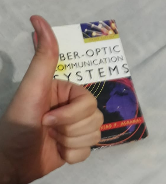

Olá! meu nome é Jonas, sou estudante de engenharia da informação na UFABC.
As bordas em laranja estão especialmente horríveis, mas é para mostrar que eu sei colocar bordas...
O arquivo a seguir é um áudio de teste que eu gravei:
Eu dei a ideia no meu grupo de colocar a música Conga de Gloria Estefan na capa do grupo para chamar a atenção dos alunos durante a votação e tentar conseguir o ponto extra:
Caso eles não tenham gostado da ideia, você pode ouvir esse clássico dos anos 80 aqui:
Boa parte do meu tempo é dedicado a ler livros técnicos.
O últmo que eu precisei ler foi Fiber-Optic Communication Systems, de Govind Agrawal.
Já estou há quase 1 ano com esse livro. Acredito que a biblioteca ainda não funcionará por um bom tempo...
Mas pela foto, vocês podem ver que eu estou cuidado bem dele!
Durante as férias eu li Fausto, de Goethe. Não sou nada intelectual, mas acho alguns desses livros clássicos tão interessantes quanto os modernos.
Os meus vídeos favoritos estão relacionados com animais, o vídeo a seguir é um bom exemplo: